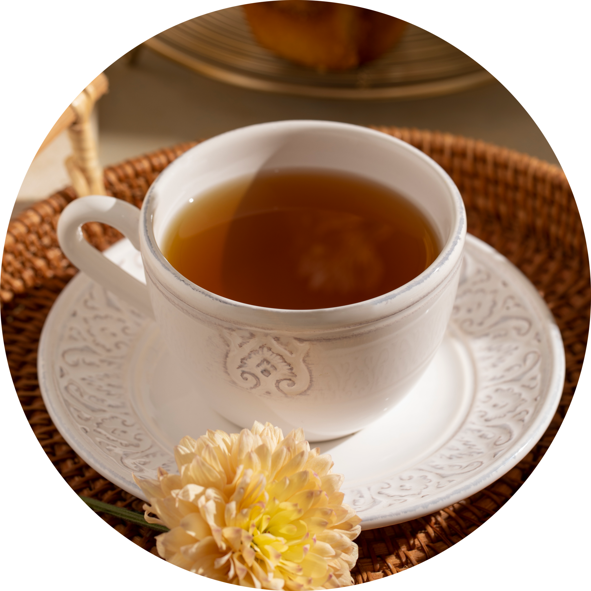

Dragão Jasmim
O que é o Dragão Jasmim?
O Dragão Jasmim é muito mais do que uma loja de chá. É um convite para desacelerar, respirar fundo e mergulhar em um mundo onde cada infusão carrega não apenas aroma e sabor, mas também história, cultura e alma. Inspirados pela força mística dos dragões e pela delicadeza das flores de jasmim, criamos um espaço onde tradição e encanto se encontram. Cada chá que oferecemos foi cuidadosamente selecionado ou elaborado para contar uma história, evocar memórias e criar momentos de presença. Nosso propósito é levar ao seu cotidiano mais do que uma bebida quente: Queremos que o ritual do chá se torne um ato de conexão com o tempo, com a terra, com culturas distantes e com você mesmo. No Dragão Jasmim, cada xícara é uma viagem. Seja bem-vindo ao nosso universo.

Por que se tornar cliente?
Porque aqui, você não compra apenas chá, você recebe uma experiência cuidadosamente preparada para aquecer corpo, mente e alma. No Dragão Jasmim, cada detalhe importa: desde a origem das folhas até o modo como embalamos cada pedido. Selecionamos chás com histórias, tradições e benefícios reais, vindos de culturas que cultivam o chá como arte e celebração. Ao se tornar nosso cliente, você entra para um círculo que valoriza o ritual, a pausa, o bem-estar e a beleza nas pequenas coisas. Você recebe não só produtos, mas conteúdos que despertam a curiosidade, guiam sua jornada e conectam você a um universo de sabores e saberes. Comprar conosco é se permitir viver com mais intenção. É transformar um momento cotidiano em algo mágico, íntimo, quase poético.
Conheça Nossos Produtos
Três blends que representam a alma do Dragão Jasmim. Tradição, cuidado e encanto em cada detalhe.
Força do Dragão
Chá preto com especiarias, intenso e envolvente. Ideal para começar o dia com elegância.
Sonho de Jasmim

Infusão relaxante com jasmim, lavanda e camomila. Perfeita para desacelerar com serenidade.
Brisa do Oriente

Um chá verde leve e floral com jasmim. Um momento de paz em forma de xícara.